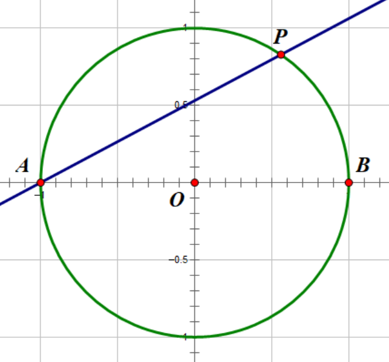

二次域
二次有理数
定义
二次有理数 是可以表示为整系数一元二次方程的解的数。
用词说明
在初等数论书上，「二次有理数」写为「二次无理数」。这是因为，二次有理数不是有理数，而是无理数。在近世代数书上，写为「二次有理数」或者「二次代数数」，表明它与有理数拥有相似的性质。
同样地，还有「二次整数」。二次整数不是整数。「二次有理数」一词与「二次整数」相对应，与有理数和整数的关系完全一致，有理数是整数的比值。
所有二次有理数均可以表示成以下的形式：
其中，\(a\) 与 \(b\) 为有理数，\(d\) 为整数。任意这种形式的数都是二次有理数，两者为一一对应。
若 \(d\) 为正，则集合中所有数均为实数，称为实二次整环或者实二次域。若 \(d\) 为负，则集合中除了一般的有理数以外全部不是实数，称为虚二次整环或虚二次域。
范数
同一个整系数二次方程有两个根。如果它们不是一般的有理数，那么它们在形式上只在二次根号前相差一个正负号。
如果两个二次有理数只在二次根号之前相差正负号，称它们互为 共轭 关系。因为一般的有理数在二次根号前面的系数是 \(0\)，因此一般的有理数与它自身为共轭关系。
显然，在虚二次域中，某数的共轭的概念，与复数共轭的概念一致。但是在实二次域中这两个概念不一致。
在二次域中，由加减乘除（非 \(0\)）四则运算产生的等式，无法区分共轭关系。也就是说，在等式中将每一个数换成它的共轭数，即将每一个二次根号的符号改变，等式仍然成立。
二次有理数与它的共轭的和称为 迹。某数的迹就是它的有理数部分的 \(2\) 倍，形式简单，因此很少研究迹。
二次有理数与它的共轭的积称为 范数：
显然，在虚二次域中，范数的概念，与复数的模的平方的概念一致。但是在实二次域中这两个概念不一致。由于 \(d\) 不含平方因子，不可能是平方数，因此只有 \(0\) 的范数是 \(0\)。
范数具有保持乘法和除法（非 \(0\)）的良好性质。
一个二次有理数与它的共轭相乘为这个数的范数，因此它的倒数就是它的共轭与范数之比。
二次整数
首项系数为 \(1\) 的整系数二次多项式 \(x^2+px+q=0\) 的零点是：
称为「含有根号 \(d\) 的二次整数」，全体记作二次整环 \(Z(\sqrt{d})\)，对于加减乘封闭。不同的 \(d\) 对应于不同的整环。普通的整数环是每一个二次整环的理想。
第一种情况：对于所有的 \(d\)，\(a+b\sqrt{d}\) 一定是二次整数。
第二种情况：当 \(d\) 模 \(4\) 余 \(1\)，\(a\) 与 \(b\) 是奇数的时候，\(\frac{a+b\sqrt{d}}{2}\) 也是二次整数。因为这种情况也是首系数为 \(1\) 的整系数多项式的零点：
奇数的一半称半整数。两个半整数配上除以 \(4\) 余 \(1\) 的 \(d\) 开二次根号，也是二次整数。
以上的 \(d\) 全部可正可负。当 \(d\) 为正时就是普通意义的二次根号，当 \(d\) 为负的时候可以理解成对绝对值开根号，并乘以虚数单位 \(\mathrm{i}\)。
二次整数有两个线性无关的分量，因此二次整数是二维的。
同类二次整数的比是二次有理数。
单位数
如果一个二次整数的倒数还是二次整数，称这个二次整数为 单位数。二次整数是单位数的充要条件是它的范数为 \(1\) 或 \(-1\)。
单位数对于乘法封闭，构成单位群。有一个核心位置的定理（证明极难）：
狄利克雷单位定理：数域的单位群是有限生成阿贝尔群。
狄利克雷单位定理表明：单位群维数有限，存在一组基。所有的单位数可以由基的乘积表示。这组基（不含 \(1\) 和 \(-1\)）称为 基本单位数。
三种整环
有三种整环的概念：
Euclid 整环：满足 辗转相除法 的整环。
主理想整环：每一个理想都是主理想的整环。一个重要的性质是，它满足 Bezout 定理。
唯一分解整环：每个元素的非相伴分解都唯一的整环，满足 唯一分解定理。
三个概念是层层嵌套包含的关系，唯一分解整环在最外面，欧几里得整环在最里面。欧几里得整环一定是主理想整环，主理想整环一定是唯一分解整环，而反之则不然。因此三个定理也有层层递推的关系。
虽然唯一分解整环不一定是主理想整环，例如在取模多项式整环中可以找到反例，但是在二次域中，这两个概念是重合的，即二次域的主理想整环与唯一分解整环范畴重合。因此，二次域只分为辗转相除和唯一分解两种特殊情形。
在虚二次域中，只有 \(-1\)、\(-2\)、\(-3\)、\(-7\) 和 \(-11\) 对应的虚二次整环是 Euclid 整环，其余均不满足辗转相除法。
在实二次域中，只有 \(2\)、\(3\)、\(5\)、\(6\)、\(7\)、\(11\)、\(13\)、\(17\)、\(19\)、\(21\)、\(29\)、\(33\)、\(37\)、\(41\)、\(57\) 和 \(73\)，共 \(16\) 个整环是 Euclid 整环。
对于二次域，有很重要的概念叫类数。理想的全体除以理想构成的群，得到商群的大小就称为类数。类数为 \(1\)，说明相应的整环是主理想整环。
Gauss 猜想有无穷个类数为 \(1\) 的实二次域，这个问题至今没有得到解决——关于实二次域的大多数此类研究进展都很慢。
已经得到解决的是，虚二次域中，加上上面的 \(5\) 个，只有 \(-19\)、\(-43\)、\(-67\) 和 \(-163\) 也是主理想整环。
好在之前的嵌套关系成立。我们只需知道高斯整环（\(-1\)）和艾森斯坦整环（\(-3\)）都是 Euclid 整环，满足辗转相除法和唯一分解定理就够了。
参见 OEIS：
Squarefree values of n for which the quadratic field Q(sqrt(n)) is norm-Euclidean
Q(sqrt(n)) is a unique factorization domain (or simple quadratic field)
相伴与唯一分解
如果一个二次整数乘一个单位数得到另一个二次整数，那么这两个二次整数是 相伴 关系。
唯一分解定理一定要考虑相伴关系才有可能成立。例如，若不考虑相伴关系，由于 \(-1\) 是单位数，整数不满足唯一分解：
我们必须在相伴这个等价关系构成的诸多等价类中，为每个类指定一个数作为这个类的代表，即定义 本原数，才可能有唯一分解。
例如在上面的例子中，如果指定 \(2\) 和 \(5\) 为本原数，那么 \(-2\) 和 \(-5\) 就不是本原数，此时 \(10\) 的分解才变得唯一了。
本原数的规定是人为的，即如果定义 \(-2\) 和 \(5\)、\(2\) 和 \(-5\) 或者 \(-2\) 和 \(-5\) 为本原数，在唯一分解的角度不会引起矛盾。一般会根据实际问题的研究方便定义本原数。例如，如果我们习惯于在正整数范畴研究问题，那么将正整数定义为本原数即可。
我们看到，事实上只需为所有的素数（在唯一分解前提下与不可约数等价）定义本原数就够了，其他的非素数的本原数定义必然由素数的本原数定义合成。
狄利克雷特征
讲述虚二次域的相关内容，需要先讲讲有关特征的概念。
定义：对于正整数 \(k\)，\(\chi(n)\) 是定义在全体整数集合上不恒为 \(0\) 的数论函数。如果满足条件：
不互素时取值为 \(0\)：\(\chi(n)=0\)，当 \(\gcd(n,k)>1\)。
周期为 \(k\)：\(\chi(n+k)=\chi(n)\)。
完全积性：对于任意整数 \(m\) 和 \(n\)，有 \(\chi(mn)=\chi(m)\chi(n)\)。
那么，\(\chi(n)\) 称为模 \(k\) 的狄利克雷特征，简称模 \(k\) 的特征，可以记作 \(\chi(n, k)\)。
根据上述定义，可以直接推出：
在 \(1\) 处取值为 \(1\)：\(\chi(1)=1\)。
在 \(-1\) 处取值为 \(\pm 1\)：\(\chi(-1)=\pm 1\)。
互素时取值：当 \(\gcd(n,k)=1\) 时，\((\chi(n))^{\varphi(k)}=\chi(n^{\varphi(k)})=\chi(1)=1\)。
即，当自变量 \(n\) 与模数 \(k\) 互素时，模 \(k\) 的特征只能取 \(1\) 的 \(\varphi(k)\) 次单位根，值域有限，因此模 \(k\) 的特征的个数也有限。
显然，当 \(\gcd(n,k)=1\) 时，\(\chi(n)\) 恒取值为 \(1\) 的数论函数一定是模 \(k\) 的特征，称为模 \(k\) 的主特征，记作 \(\chi^0 (n, k)\)。模 \(1\) 和模 \(2\) 只有主特征。
一个特征，如果只取实数值（即取值为 \(\pm 1\)），称为实特征。模 \(3\) 和模 \(4\) 的特征都是实特征。
能取到非实数值得特征称为复特征。两个模 \(k\) 的特征，如果取值在复数域上共轭，称为共轭特征。实特征的共轭特征为本身。共轭特征的乘积为主特征。模 \(k\) 的全体特征的共轭仍旧为模 \(k\) 的全体特征。
关于特征，有如下一些定理：
定理：设 \(\gcd(k_1, k_2)=1\)，那么一定存在唯一的模 \(k_1\) 的特征 \(\chi(n, k_1)\)，使得当 \(n\equiv 1\pmod k_2\) 时，
定理：设 \(\gcd(k_1, k_2)=1\)，那么一定存在唯一的模 \(k_1\) 的特征 \(\chi(n, k_1)\) 以及模 \(k_2\) 的特征 \(\chi(n, k_2)\)，使得对于任意整数 \(n\)，有：
根据这个定理，特征可以随着模数的分解而分解，因此只需研究模为素数幂的特征即可。
对于奇素数的幂 \(p^a\)，存在原根 \(g\)，特征完全由它在原根 \(g\) 上的取值唯一确定。特征在原根 \(g\) 上可能的取值有：
因此在模 \(p^a\) 情形下至多有 \(\varphi(p^a)\) 个不同的特征。根据原根对数的性质，上述特征在 \(l\) 不同时不同。因此，模 \(p^a\) 的特征恰好有 \(\phi(p^a)\) 个。
标记顺序以作为区分：当 \(\gcd(n,p)=1\) 时，取定模 \(p^a\) 的原根 \(g\)，则有
该式唯一确定一个模 \(p^a\) 的特征。并且，当且仅当 \(l=0\) 时为主特征，当且仅当 \(l=0\) 或 \(l=\frac{\varphi(p^a)}{2}\) 时为实特征。
同样，根据模 \(2^a\) 的性质可以证明，模 \(2^a\) 的特征恰好有 \(\varphi(2^a)\) 个。综上就有模 \(k\) 的特征恰好有 \(\varphi(k)\) 个。
可以证明，模 \(k\) 的特征的乘法群，与模 \(k\) 的缩剩余系的乘法群同构。
定理：设 \(k\) 是不为 \(1\) 的正整数，\(\gcd(a,k)=1\)，\(a\) 与 \(1\) 模 \(k\) 不同余，那么一定存在模 \(k\) 的一个非主特征 \(\chi\)，使得 \(\chi(a)\) 不为 \(1\)。
类似于本原单位根，也有原特征的概念。模 \(k\) 的原特征的取值的最小正周期为 \(k\)，否则为非原特征。非原特征的最小正周期整除 \(k\)。
二次剩余符号 \(\left(\frac{p}{q}\right)\) 是模 \(q\) 的实特征。
模 \(3\) 的非主特征只有 \(\left(\frac{n}{3}\right)\)，模 \(4\) 的非主特征只有 \(\left(\frac{-1}{n}\right)=\left(\frac{-4}{n}\right)\)。
二次域
具有同样 \(\sqrt{d}\) 的二次有理数的全体，构成一个集合，记作 \(Q(\sqrt{d})\)。
容易证明，集合 \(Q(\sqrt{d})\) 对于加、减、乘、除封闭，即任意取出两个元素，都可以进行四种运算（保证除数非 \(0\)），并且结果也在集合中。因此，它是一个域，称为 \(\sqrt{d}\) 的二次域。
\(1\) 和 \(\sqrt{d}\) 在有理数域上线性无关，所以在同一个二次域中，二次有理数的表示法具有唯一性。如果有：
那么有：
共轭定理：在同一个二次域中，如果一个等式仅经过有限次合法四则运算构成，那么对等式两边所有数同时取共轭，等式仍然成立。
证明：取共轭后的新的等式左右两边，结果一定仍然在该二次域中。只需证明它们对应的有理系数和无理系数相等。
无论如何，系数都与根号 \(d\) 的整体无关，取共轭只是将根号 \(d\) 换成了负根号 \(d\)，从头到尾只用到「平方等于 \(d\)」一个性质，因此，对应系数相等。
拓展
二次域 \(Q(\sqrt{d})\) 中的四则运算与一类特殊形式的二阶方阵同构：
比如，乘法的行为模式完全一致：
因此二次有理数的一些性质可以由二阶方阵来解释。比如，范数恰好就是它的行列式：
求倒数也就与伴随方阵求逆法一致。伴随方阵恰好就是它的共轭：
这种二阶方阵的记法参考了二维坐标系的旋转矩阵：
二维坐标系的旋转矩阵的行为模式就像 \(d\) 为 \(-1\) 的特殊数域一样。
关于实二次域的相关研究，可以参见连分数和佩尔方程的部分。
虚二次域
在虚二次域中，仅当 \(d\) 为 \(-1\) 和 \(-3\) 的时候，存在除了 \(1\) 和 \(-1\) 以外的单位数。当 \(d\) 为负数且不为 \(-1\) 或 \(-3\) 的时候，单位数只有 \(1\) 和 \(-1\)。
当 \(d\) 为 \(-1\) 的时候，单位数有 \(4\) 个：\(1\)，\(-1\)，\(\mathrm{i}\)，\(-\mathrm{i}\)。当 \(d\) 为 \(-3\) 的时候，单位数有 \(6\) 个：\(1\)，\(-1\)，\(\frac{1+\sqrt{3}\mathrm{i}}{2}\)，\(\frac{1-\sqrt{3}\mathrm{i}}{2}\)，\(\frac{-1+\sqrt{3}\mathrm{i}}{2}\)，\(\frac{-1-\sqrt{3}\mathrm{i}}{2}\)。
在虚二次域中，仅当 \(d\) 为 \(-1\) 和 \(-3\) 时，存在基本单位数 \(\mathrm{i}\) 和 \(\frac{1+\sqrt{3}\mathrm{i}}{2}\)。其他情况不存在 \(1\) 和 \(-1\) 以外的其他单位数，也就不存在基本单位数。
因此，两个整环 \(Z(\mathrm{i})\) 和 \(Z(\sqrt{3}\mathrm{i})\) 是特殊的整环，称为高斯整环和艾森斯坦整环。它们直观上分别构成复平面上正方形点阵和正六边形点阵（正三角形格点），研究虚二次域的时候最经常用到这两个整环。
虚二次域中对范数的研究可以转化为 椭圆上整点问题，有名的「圆上整点问题」可以转化为对 \(d\) 为 \(-1\) 的虚二次域的研究。
Gauss 整数
一般将 \(Q(\mathrm{i})\) 称为高斯域，相应的 \(Z(\mathrm{i})\) 为高斯整环，高斯整环中的每个元素为高斯整数，即复平面上正方形格点。
高斯域恰好是四次分圆域，因此常用来解决 四次互反律 问题。
高斯整数中，一个数有四个相伴数（含本身）。
高斯整数中的全体素数分为三类：
分歧 数：\(1+\mathrm{i}\)，为原来的 \(2\) 的因子。分歧数的共轭是它的相伴数，因此可以指定任一分歧数为本原数代表。
惯性 数：所有正整数中 \(4k+3\) 形式的素数，在高斯整数中仍旧为素数。在整环扩张中保持了素数的特性，因此称为「惯性」。
分裂 数：所有正整数中 \(4k+1\) 形式的素数，在高斯整数中可以拆成一对共轭的两个素数，这两个素数不相伴。这样的新素数是分裂的。
当然，这两个共轭的素数是不同的，即共轭的两个分裂数是互素的。
对于素数中的分裂数和惯性数，本原数的指定往往有着严格的规定，这是为了解决四次剩余问题的方便。
规定：高斯整数中的本原素数 \(\pi\) 有：
\(\pi\equiv 1 \mod 2(1+\mathrm{i})\)
在 \(2(1+\mathrm{i})\) 的缩系中有 \(4\) 个剩余类，除了 \(1+\mathrm{i}\) 的每个素数的每个相伴数恰好落入其中一类。
对于 \(1+\mathrm{i}\) 与它的相伴数，一般指定 \(1+\mathrm{i}\) 是本原素数。
勾股方程
高斯整数最简单的应用是解决勾股方程的解。勾股方程是满足下面形式的方程：
左边恰好构成高斯整数的范数，即：
通过模 \(4\) 的分析，我们知道右边模 \(4\) 必然余 \(1\)，即如果含模 \(4\) 余 \(3\) 的惯性数因子，必然含偶数个。
由于分歧数和分裂数的范数都是一般整数中的素数，将左边唯一分解后必然也只能成对出现（在共轭与相伴的意义下）。即：
用一般的整数写出来就是：
勾股方程的几何意义是单位圆上的圆周角定理，或者半正切的外能代换公式。如下图：

单位圆周上的点 \(P\) 是有理点，等价于直线 \(AP\) 的斜率是有理数。
还证明相应的四次形式无解。即：
事实上，可以用无穷递降法证明，
没有整数解。
圆上整点问题
利用高斯整数的唯一分解，可以解决圆上整点问题。即给定范数为 \(n\) 的条件下，有多少个高斯整数满足这个范数 \(n\)：
仍旧将左边和右边唯一分解。左边在高斯整数意义下唯一分解，右边在正整数范畴唯一分解。
对于分歧和分裂的素数，范数是原整数中的素数，而 \(4k+3\) 形式惯性的素数，范数是原素数的平方。因此 \(n\) 中 \(4k+3\) 形式的素数必须成对出现，否则无解。
然后利用简单的计数法就知道，在 \(n\) 中 \(4k+3\) 形式的素数成对出现前提下，整点个数与含多少个 \(2\)（或 \(1+\mathrm{i}\)）无关，只与 \(4k+1\) 形式的素数个数有关，每一个 \(4k+1\) 形式的素数提供 \(2\) 中选择方法，在计数中扩大 \(2\) 倍。最后由对称性，整点个数乘 \(4\) 即可。
有解数的公式：
式中 \(\chi\) 为上文提到的狄利克雷特征，\(\chi(n,4,1)=\left(\frac{-1}{n}\right)=\left(\frac{-4}{n}\right)\)。
Eisenstein 整数
注：Eisenstein（艾森斯坦）是 Gauss 的得意门生。
一般将 \(Q(\sqrt{3}\mathrm{i})\) 称为艾森斯坦域，相应的 \(Z(\sqrt{3}\mathrm{i})\) 为艾森斯坦整环，艾森斯坦整环中的每个元素为艾森斯坦整数，即复平面上正六边形格点。
艾森斯坦域恰好是三次分圆域，也是六次分圆域，因此常用来解决 三次互反律 问题。结合已经解决的二次互反律，就能给出六次剩余的手动计算。同样，如果结合高斯域中的四次互反律，就能解决十二次剩余的手动计算。
艾森斯坦整数中，一个数有六个相伴数（含本身）。
同样，艾森斯坦整数中的全体素数分为三类：
分歧 数：\(\frac{3+\sqrt{3}\mathrm{i}}{2}\)，为原来的 \(3\) 的因子。
惯性 数：所有正整数中 \(3k+2\) 形式（\(2\) 和 \(6k+5\) 形式）的素数，在艾森斯坦整数中仍旧为素数。
分裂 数：所有正整数中 \(3k+1\) 形式（\(6k+1\) 形式）的素数，在高斯整数中可以拆成一对共轭的两个素数，这两个素数不相伴。这样的新素数是分裂的。同样，这两个共轭的素数是不同的，即共轭的两个分裂数是互素的。
对于素数中的分裂数和惯性数，本原数的指定也有着严格的规定，这是为了解决三次剩余问题的方便。
规定：艾森斯坦整数中的本原素数 \(\pi\) 有：
\(\pi\equiv 1 \mod 3\)
在 \(3\) 的缩系中有 \(6\) 个剩余类，除了 \(\frac{3+\sqrt{3}\mathrm{i}}{2}\) 的每个素数的每个相伴数恰好落入其中一类。注意，这与通常的 \(3\) 的剩余类不同。艾森斯坦整数中 \(3\) 的全部剩余类有 \(9\) 个，而缩系中有 \(6\) 个。
对于 \(\frac{3+\sqrt{3}\mathrm{i}}{2}\) 与它的相伴数，可以指定 \(\frac{3+\sqrt{3}\mathrm{i}}{2}\) 是本原素数。
艾森斯坦整数可以解决下面形式的方程的解：
\(x^2+3y^2=z^2\)
或者：
\(x^2-xy+y^2=z^2\)
或者：
\(x^2+xy+y^2=z^2\)
后两个在整数范畴是等价的。这里的求解完全仿照勾股方程即可，不再赘述。
类勾股方程
定理：设 \(z\) 为奇数，则当 \(\gcd(x,y)=1\) 时
成立，等价于存在 \(u\) 和 \(v\)，\(\gcd(u,3v)=1\)，使得
利用艾森斯坦整环的唯一分解性，该定理是显然的。
利用上述结论与无穷递降法，同样能证明三次的某种形式无解，即：
\(x^3+y^3=z^3\)
椭圆上整点问题
利用艾森斯坦整数的唯一分解，可以解决一种椭圆上整点问题。即给定范数为 \(n\) 的条件下，有多少个艾森斯坦整数满足这个范数 \(n\)。三种形式为：
或者：
或者：
方法仍旧完全一样，不再赘述。它们的结论是：
方程
解的个数为
式中 \(\chi\) 为上文提到的狄利克雷特征，\(\chi(n,3,1)=\left(\frac{n}{3}\right)\)。
记 \(n=2^l m\)，\(m\) 为正奇数。对于方程
的结论，当 \(l\) 为奇数时无解，当 \(l=0\) 时，解数为
当 \(l\) 为正偶数时，解数为
本页面最近更新：，更新历史
发现错误？想一起完善？ 在 GitHub 上编辑此页！
本页面贡献者：OI-wiki
本页面的全部内容在 CC BY-SA 4.0 和 SATA 协议之条款下提供，附加条款亦可能应用